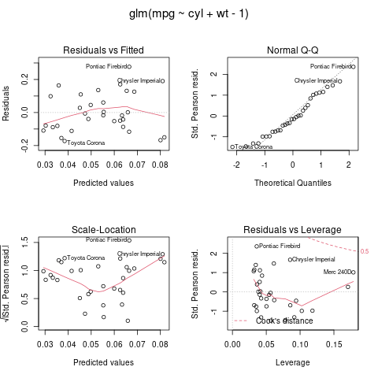

rpy2 is turning 13. It is downloaded approximately 2 millions times per year from Python Package Index (pypi), and is otherwise independently packaged by Linux distributions and conda. It is available by default in Google's data science notebook Colab, is documented to be one of the ways to use R in the Google Cloud AI notebooks, and is used at companies such as Netflix. Getting there was a combination of adaptation, contributions from users, changes in the mindset of communities, and persistence.
When rpy2 was conceived "Data Scientists" were still statisticians working at select places in the San Francisco Bay Area. It was initially a redesign and rewrite of rpy (hence the name), itself continuing exploration to make R communicate with other languages under the OmegaHat umbrella. rpy2 defined its own path toward polyglot data science though. It started out with the idea that the "language war" predominant at the time was not productive. R had a wealth of statistical and plotting capabilities through its libraries that was unmatched, and that even for "classical" methods it was more battle-tested for edge cases than anything in Python. On the other hand Python was better equipped to build software in general, run services, and be a glue language. Both of those two last statements remain valid today, although the lines blurred a little as both languages gained libraries. Contrary to the language centric expansionist view of the time, which consisted in reimplementing in your preferred language anything you would need or see missing, the philosophy behind rpy2 was that the reimplementation of complex numerical algorithms in R that withstood the sustained scrutiny and use be the statistical computing community has enormous value. True to the programming motto "first make it work, then make it correct, finally make fast", rpy2 wanted to offer an easier path to the first two steps, and turn the third one into "make it fast it you really need to".
I have spent a lot of my time in research and innovation environment. Building prototypes is often the best thing to do for the project. For that stitching together existing parts with the minimum amount of customization necessary is an efficient strategy. This is no different from physical prototypes where off-the-shelf parts are assembled with bolts, wires, tape, or gum. If those existing parts are trusted to perform their respective tasks correctly and under a relatively wide range of conditions it is better. That novel construct may push its parts to their limits, sometimes unknowingly. Having confidence that edge cases have a chance to be covered because the code has been used a lot and in a wide range of situations will help during the always surprisingly longer than anticipated time spent troubleshooting. Python can orchestrate everything and implement the high-level logic of the prototype, and R libraries can used when this is the most tested implementation. The motto is "reuse, don't reimplement (unless you must)".
Moreover, in research settings that prototype will often be the only implementation in the end. There will not be a rewrite for production. This can happen when the purpose of the prototype is to help shape what is the question to be answered. Resolving enormous amounts of ambiguity happens quite a lot then. Frequently it cannot be fully done through thought experiments or placing colored sticky notes on a board during a co-creation workshop. This can also happen when the user base for the prototype is very small; for example a handful of scientists at the company. In that case rewriting for scale might is not worth it.
The effort needed to create that data science proof-of-concept, demonstration, or prototype and putting it or its results into the hands of the first users is a critically important factor. Principled positions about whether Python or R is a universally better language are much less relevant.
This thinking seems to have been correct, at least partly. Choosing a side between Python and R as if it was an oath of allegiance is no longer the only mainstream option. What I did not anticipate in the beginning was that individuals themselves would increasingly become polyglot. Nowadays many job descriptions list both languages in their requirements. This first sign of this happening came early though. In 2009, with a post from Nathaniel Smith about an IPython extension called rnumpy. Beside creating a better polyglot REPL environment by adding R to IPython, this showed me that there was a path to user adoption outside of trying to completely hide R written by "R users" behind a Pythonic API for "Python users". Later the "R magic" IPython expanded on the idea and added the integration of R graphics with the IPython notebook (soon to become Jupyter). This became popular rapidly. Or maybe users of the R magic were just the most vocal. The rise of Jupyter must have played a major role in getting users to rpy2. When the Jupyter project reorganized to have core features and extensions in different packages Dav Clark, with the help of Jupyter contributors, made rpy2 the new home for the "R magic". Work in that direction continues today with Michal Krassowski exploring how to render R animated plots in Jupyter, and bring code autocompletion to R cells in a notebook.
Loading the R magic is achieved with:
%load_ext rpy2.ipython
Any cell in the Python notebook can be declared to contain R code with the prefix %%R. Optional arguments can be added, and documentation for them is available with ?%%R. For example:
%%R --type=cairo-png
# Load demo dataset in R about cars.
data(mtcars)
# Fit a general linear model.
fit <- glm(mpg ~ cyl + wt - 1, family = Gamma, data = mtcars)
print(summary(fit))
# 4 plots on one page.
par(mfrow = c(2, 2), oma = c(0, 0, 2, 0))
plot(fit)
Call:
glm(formula = mpg ~ cyl + wt - 1, family = Gamma, data = mtcars)
Deviance Residuals:
Min 1Q Median 3Q Max
-0.18371 -0.09019 -0.01740 0.09807 0.25471
Coefficients:
Estimate Std. Error t value Pr(>|t|)
cyl 0.0036767 0.0009649 3.810 0.000641 ***
wt 0.0096452 0.0018713 5.154 1.51e-05 ***
---
Signif. codes: 0 ‘***’ 0.001 ‘**’ 0.01 ‘*’ 0.05 ‘.’ 0.1 ‘ ’ 1
(Dispersion parameter for Gamma family taken to be 0.01427085)
Null deviance: NaN on 32 degrees of freedom
Residual deviance: 0.41904 on 30 degrees of freedom
AIC: 147.43
Number of Fisher Scoring iterations: 4

This mix of languages within the same document or source file was not what polyglot data applications were envisioned to be when designing rpy2. Because of the absence of overlap between the R and Python communities at the time it was assumed that Python programmers would not know much about R themselves. They were going to build systems or applications integrating features implemented in R and made available to them. The resulting application would be polyglot, but different teams would develop the Python and R parts.
As a consequence the rpy2 design tried to hide R mannerisms behind Pythonic classes and methods. It also tried to have an API that fails early whenever a chance to prevent ambiguities or surprises during the execution of code. For example, by default rpy2 does not try to guess whether a Python list should be mapped to an R list or an R array, or guess the type of the array. A Python list will be mapped to an R list.
seq = [1, 2, 3]
import rpy2.robjects as ro
ro.globalenv['vec'] = seq
# This is an R list.
print(ro.globalenv['vec'])
[[1]] [1] 1 [[2]] [1] 2 [[3]] [1] 3
To have a simpler data structure, such as an array of integers, it must specified. Here by using the class IntVector.
import rpy2.robjects.vectors as rvec
vec_i = rvec.IntVector(seq)
ro.globalenv['vec_i'] = vec_i
# This is an R array.
print(ro.globalenv['vec_i'])
[1] 1 2 3
That effort to fully have R behind a Python facade was not universally successful though. It appeared to work with larger project teams where Python and R subteams coexisted, and the Python developers could ask their R colleagues for help about error messages, or why particular input to an R function would end with an error. It did not appear to work well when there was only a Python team without R knowledge trying to use code from an R library. Error messages that can be triggered by calling R functions only make sense to R programmers, some of the time. R can be surprising, or sometimes just plain esoteric even for the initiated. There is an unofficial manual called "R inferno" for R programmers. In addition to that, calling R from Python can sometimes make debugging R more arduous that it would be if just using R. A Python-only team might be able to safely go through this. But don't tell them the odds.
What emerged with the increase of polyglot data scientists or engineers is that most project teams using rpy2 turned out to be individuals or very small teams needing to get the job done. Not structured teams with Python and R groups.
While notebook users were adding chunks of R code with %%R, rpy2 always also had a way to evaluate Python strings as if they were R code. I have used it a lot for custom R functions that I'd like to call from Python myself. For example:
from rpy2.robjects import r
my_rfunc = r(
"""
function(x) {
rnorm(x) + runif(x)
}
""")
my_rfunc(10)
FloatVector with 10 elements.
| 0.048959 | 0.035520 | 1.323592 | ... | -0.577286 | -0.861414 | 1.148197 |
This is the equivalent of notebooks's "R magic". However, this way to intersperse R code snippets in a Python codebase does not allow to fully integrate R into Python code because of one difference between Python and R: in R expression can be arguments to functions, and the expression will only be evaluated when the result is needed (lazy evaluation).
For example, consider the following R function:
foo <- function(x = FALSE, y = bar + 1) {
if (x) {
y
} else {
NA
}
}
It will return the value for y if x is TRUE, and NA otherwise.
The default value for y is the expression bar + 1. By default there is no symbol bar
in a new R session but this will only become a concern when x is TRUE. This is what happens
in R:
> foo()
[1] NA
> foo(x = TRUE)
Error in foo(x = TRUE) : object 'bar' not found
> bar <- 1
> foo(x = TRUE)
[1] 2
>
R packages like ggplot2 and dplyr make extensive use of this. A user can pass expressions
to be evaluated in the context of the data table also passed as an argument to functions.
For example:
dataf %>%
filter(x + y < 0) # x and y are columns in the table dataf.
On the other hand Python evaluates expressions in a function signature immediately (eager evaluation).
For example, the following code will fail with NameError: name 'bar' is not defined:
def foo(x=True, y=bar+1):
# No need to bother. The signature will make the function definition fail.
pass
The creation of unevaluated R code from Python has always been technically
possible by using various rpy2 functions, but the package only introduced
recently a high-level convenience function to do it easily. My
indicator for the adoption of a feature is bug reports or questions about usage.
I have not seen many yet and I do not know if this is because of absence
of interest or because it is perfectly documented and works flawlessly.
However, I do think that this is an important addition. It allows bilingual
users to weave R into Python code bases more seamlessly. R snippets can be like
a domain-specific language in Python while preserving the lazy evaluation of
expression that is specific to R.
The constructor is called rl for "R language" and works like this:
from rpy2.robjects import rl
expr = rl('1 + 2')
# Unevaluated R language object.
expr
Rlang( 1 + 2 )
Printing will trigger an evaluation of the expression.
print(expr)
[1] 3
The expression still exists in its unevaluated form. It is evaluated when the R consumer of the expression needs the result.
expr
Rlang( 1 + 2 )
An example of this in practice with dplyr:
from rpy2.robjects.packages import importr
dplyr = importr('dplyr')
dplyr.filter(rl('mtcars'),
rl('gear >= 3'))
R/rpy2 DataFrame (32 x 11)
| mpg | cyl | disp | ... | am | gear | carb |
|---|---|---|---|---|---|---|
| 21.000000 | 6.000000 | 160.000000 | ... | 1.000000 | 4.000000 | 4.000000 |
| 21.000000 | 6.000000 | 160.000000 | 1.000000 | 4.000000 | 4.000000 | |
| 22.800000 | 4.000000 | 108.000000 | 1.000000 | 4.000000 | 1.000000 | |
| 21.400000 | 6.000000 | 258.000000 | 0.000000 | 3.000000 | 1.000000 | |
| ... | ... | ... | ... | ... | ... | |
| 15.800000 | 8.000000 | 351.000000 | 1.000000 | 5.000000 | 4.000000 | |
| 19.700000 | 6.000000 | 145.000000 | 1.000000 | 5.000000 | 6.000000 | |
| 15.000000 | 8.000000 | 301.000000 | 1.000000 | 5.000000 | 8.000000 | |
| 21.400000 | 4.000000 | 121.000000 | 1.000000 | 4.000000 | 2.000000 |
Nesting calls quickly becomes hard to read or maintain though. Chaining calls
is much nicer. rpy2 has a wrapper for dplyr that implements it. It helps
blend R snippets of arbitrary complexity using dplyr into Python calls
while keeping the code clean and readable.
Computing the average and standard deviation of consumptions in liters per 100km according
to the number of carburetors for cars with at least 3 gears can be written as elegantly as it
would in R with dplyr:
import rpy2.robjects.lib.dplyr as rlib_dplyr
print(
rlib_dplyr.DataFrame(ro.globalenv.find('mtcars'))
.filter(rl('gear >= 3'))
# Convert consumption to metric (liters per 100km).
.mutate(l_per_100km = rl('mpg * 235.215'))
# Mean and sd stratified by number of carburetors.
.group_by(rl('carb'))
.summarize(rl('across(l_per_100km, list(mean = mean, sd = sd))'))
)
# A tibble: 6 x 3 carb l_per_100km_mean l_per_100km_sd1 1 5961. 1412. 2 2 5269. 1287. 3 3 3834. 248. 4 4 3714. 920. 5 6 4634. NA 6 8 3528. NA
Beside the language itself, polyglot data analysis will require the ability to share data structure between the languages. Writing about this in the context of Python and R with rpy2 is for an other time though.